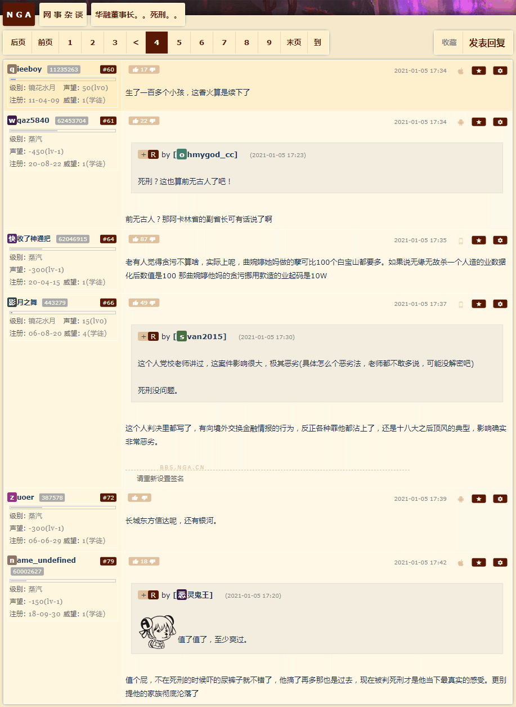
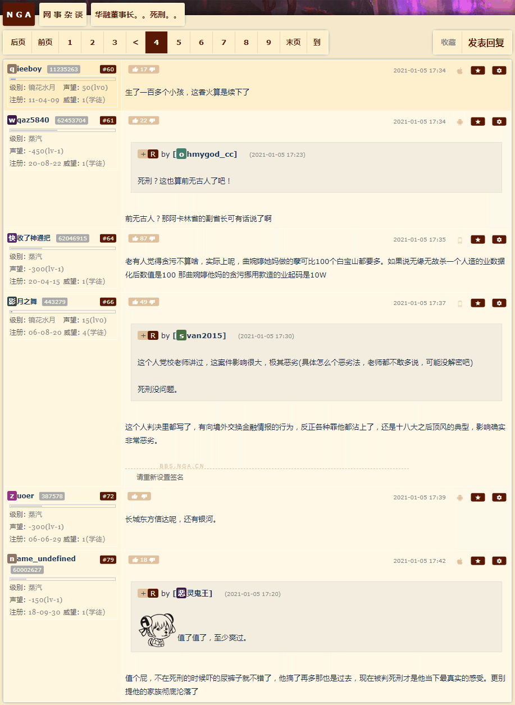

搬运大便辛苦了
刚爬起来酒劲还在头昏脑胀，上网乱转发现国际一流和谐宜居之都「高学历精英社交圈」正在首页今日头条位置醒目应景推荐了一条色目含量甚高的重要情报：
如何看待韩媒称中情局对华情报工作受挫，在北京已很难找到线人？而今日次条往下则是：
抓了法国人的东京地检特搜部，真是美国设在日本的东厂？ 美国实质操控了日本和韩国的政治，这种说法是真的吗？其中主流意见不约而同的提到了「东京地检特搜部」和「韩国检察厅」都很奇怪地拥有调查本国元首/首脑的权力。
因此，日本和韩国人民在实质上没有选择自己国家领导人的权利，这两个国家因而也没有办法选择自主的发展道路。因为，一旦某个个体国家领导人，计划/开始执行背离了美国全球战略的政策时，他/她就会被贪腐等丑闻缠身，继而失去政治生命。
举一反三触类旁通，要不惮以最大的恶意揣测「五京并立」的政治规矩和组织纪律之下，其它「锦衣卫」「血滴子」的定位。
曰若稽古，战国齐、唐、新罗、渤海国、契丹、女真，都不约而同的采取过「五京制」，类比环地中海的「四帝并立」，是在那交通和通信技术条件落后的情况下，对于远超中央控制范围的版图进行统治的手段。
太阳底下没有新鲜事，古今中外莫不是如此。所以无论市面上色目情报掮客叫嚣「入关」也好「反清复明」也罢，只不过影响到鹰犬爪牙制服前胸后背大圆圈当中「勇」「巴图鲁」字样的拼写方式以及其领队职称是「千户」还是「章京」而已。
与此同时，「兲子脚下首善之区黄脖子绿帽二代论坛」之上，人民群众正在奔走相告一条甚为喜闻乐见的重要情报：
 

其它宣传阵地当中出现了曰若稽古和如是我闻的爆料。前者提到了「中山靖王」疑似贾夫人出轨生的野种并且按照「多多生养遍布大地」政治规矩和组织纪律炮制了一百多个儿子；后者提到了「天津市公安局长武长顺被指涉贪金额高达74亿人民币、道德败坏，长期与多名女性通奸，除包养四名警花外，还与一名女艺人和数名女大学生非法同居，先后生育了九个私生子。经组织监定，九个私生子中只有三个是他亲生的」的旧闻。
于是线索就联系起来了，复旦残联下属滴血认亲实验室鉴定开国元勋刘少奇乃「J
色目太君」、周恩来乃「E
泥鸽太君」，九省通衢「军网最黄黄网最军」爆料「六个开国元勋铁帽子王没有一个是中国人」，结合这次「一己之力导致全国全面筛查色目含量，应检尽检一个都不能少」……确实提供了党国高音喇叭循环播放党国栋梁振聋发聩宣传的「腾笼换鸟」色目钦定大目标的充沛唯物主义证据。
至于娱乐至死の色目逗哔按照岗位职责把话题向下半身方向引领，包括但不限于「后宫一百多个，它忙得过来么」，已经不是个事儿了。早有色目情报掮客曰若稽古指出「榜样的力量是无穷的」，以及博导学家动辄口诵最高指示「妓院与皇宫两处，更是天下最虚伪、最奸诈的所在」，属于指桑骂槐。于是在《异闻录》当中化用为正文：
“我考虑过了，如果想展现各种家学渊源的‘缩影’，需要一些技巧”，郭春海补充，“比方说智多星强调的皇宫兼妓院的生活环境吧，就是山东久经考验的卓越的政治家、军事家、革命家田常同志篡党夺权传奇经历当中的重要一环，先去市面上搜集充沛的长腿美少女塞入后宫，再邀请来自五湖四海为了同一个目的上门嫖娼的革命同志们随意配种，七十多个儿子都是野种兼贵种，革命队伍在一代之内就发展壮大了”。
而山东色目公务员自诩「革命导师」追着我狂喷「头顶绿得发黑」「性生活都有别人代劳」「每一个看上的美女都被后清亲王用过」，更是不打自招。除了要有「桑」的自知之明而不惮以最大的恶意揣测其所骂的「槐」之外，还要结合家贼把持我的身份证不知道作甚去了，以及全国婚姻记录迄今为止仍然互不联网的怪现状，所以「邦昌時代」的真相其实已经呼之欲出了也。